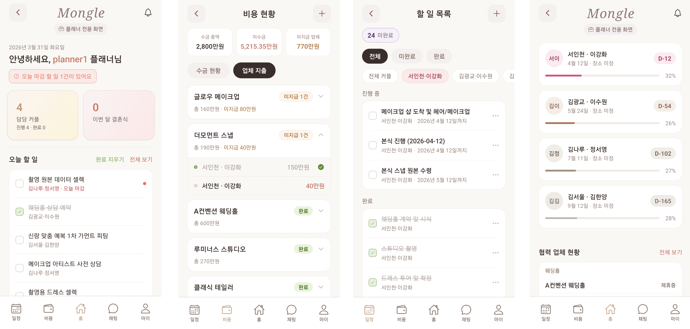
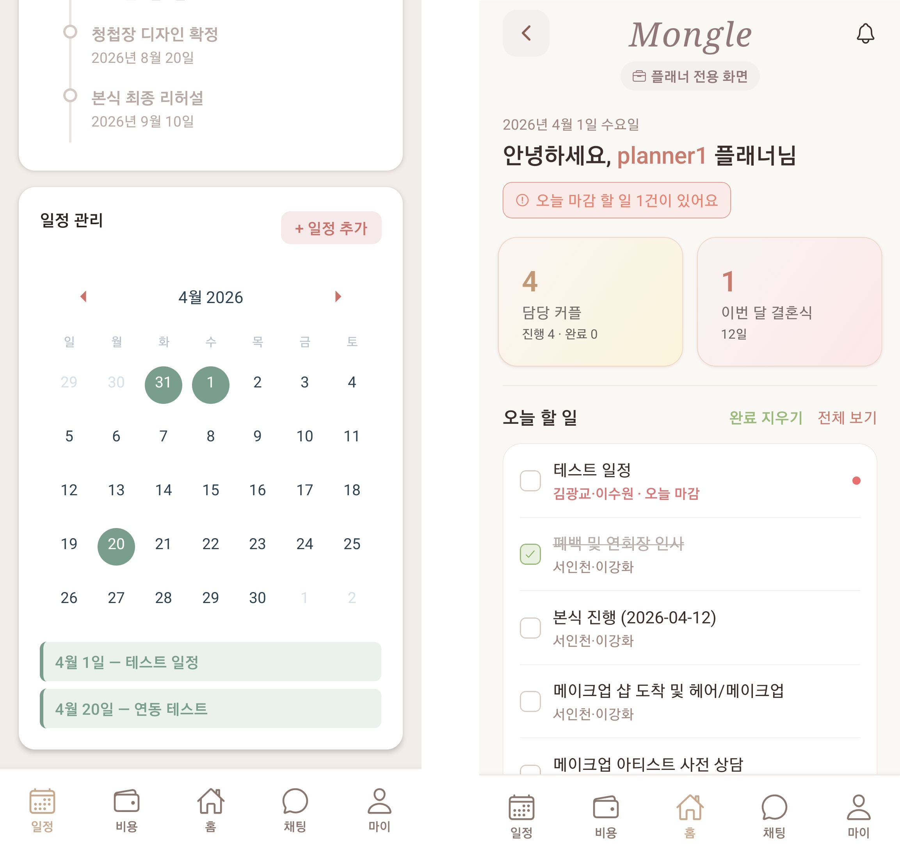
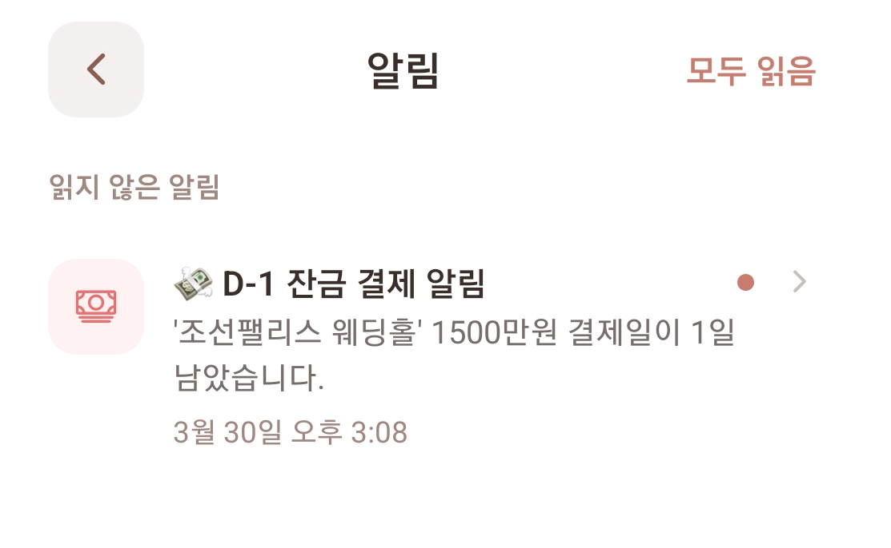
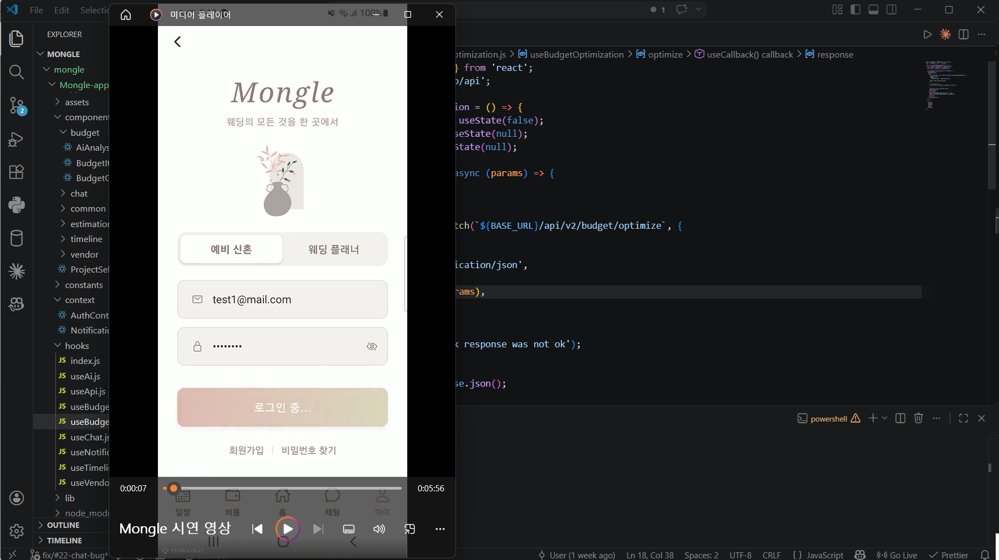

오늘의 작업 요약
| 구분 | 내용 | 파일 |
|---|---|---|
| 연동 | 플래너 대시보드 Supabase 연동 | dashboard.jsx |
| 연동 | 할 일 목록 Supabase 연동 | planner_todo_list.jsx |
| 연동 | 비용 현황 Supabase 연동 | planner_budget.jsx |
| 연동 | 협력 업체 Supabase 연동 | wedding_vendor_partners.jsx |
| 연동 | 커플 목록 Supabase 연동 | couple_list.jsx |
| 연동 | 커플 알림 시스템 Supabase 연동 | (couple)/notifications.jsx |
| 검증 | 플래너-커플 간 실시간 데이터 동기화 검증 | — |
| 버그 | planners 라우팅 가드 예외 처리 추가 | app/_layout.jsx |
| 버그 | fetchPlanner Join 제거 → 단순 select('*') 변경 | planners/[id].jsx |
| 버그 | handleConsultSubmit 수신자 ID 별도 쿼리 처리 | planners/[id].jsx |
| 버그 | user_profiles planner 행 SELECT RLS 정책 추가 | Supabase DB |
| 촬영 | 주요 플로우 데모 영상 촬영 (scrcpy) | — |
플래너 전용 화면 Supabase 연동

아래 5개 화면을 Supabase와 연동하여 실시간 DB 데이터가 화면에 정상 반영되는지 확인했습니다.
| 화면 | 파일 |
|---|---|
| 대시보드 | dashboard.jsx |
| 할 일 목록 | planner_todo_list.jsx |
| 비용 현황 | planner_budget.jsx |
| 협력 업체 | wedding_vendor_partners.jsx |
| 커플 목록 | couple_list.jsx |
-
하드코딩 임시 데이터 전체 제거 후
useAuth()에서planner_id를 꺼내 모든 쿼리 필터로 사용. - 5개 테이블 Realtime 구독 추가 — 변경 시 자동 갱신.
-
채널 네이밍 규칙:
{화면}-{테이블}-${planner_id}패턴으로 중복 방지.
플래너-커플 데이터 실시간 동기화

플래너가 일정을 수정했을 때 커플 화면에 즉시 반영되는지, 반대의 경우도 유효한지 상호 데이터 무결성을 검토했습니다.
-
플래너가
couple_schedules에 일정을 추가·수정하면 커플 화면에서 실시간으로 확인 가능한 것을 검증. -
Supabase Realtime 채널이
planner_id기반 필터로 올바르게 범위를 제한하고 있음을 확인.
(couple)/notifications.jsx Supabase 연동

커플용 알림 화면을 Supabase와 연동하고 실시간 알림 피드가 정상 표시되는지 확인했습니다.
-
NotificationContext의setUserId()를(couple)/(tabs)/index.jsx에서 호출하도록 연결하여 알림 데이터 fetch 활성화. - 읽음/안읽음 섹션 분리, 하단 모달 상세, 모두 읽음 버튼, 알림 삭제 기능까지 포함된 전면 교체 버전으로 완성.
-
알림 dot이
unreadCount > 0조건부로 표시되도록 수정.
이슈 — planners 폴더 접근 오류 및 상담 신청 실패
ERROR: 상담 신청 실패 — 사용자 정보를 식별할 수 없습니다.
app/(couple)/planners/[id].jsx의
handleConsultSubmit 함수에서 사용자 정보를 가져오지
못하는 문제였습니다. 원인은 세 단계에 걸쳐 발생했습니다.
원인 1 — 라우팅 가드 문제 (app/_layout.jsx)
planners 폴더가 (couple) 그룹 밖에 위치해
있어, _layout.jsx의 라우팅 가드가 해당 경로를 비정상
접근으로 판단하고 /(couple)로 강제 리다이렉트했습니다.
} else if (!inCoupleGroup) { router.replace('/(couple)'); }
const inPlannerPage = rootSegment === 'planners'; // 추가 } else if (!inCoupleGroup && !inPlannerPage) { // 수정 router.replace('/(couple)'); }
원인 2 — Supabase Join 쿼리 방향 오류
(planners/[id].jsx)
user_profiles!planner_id Join이 외래키 방향과 반대로
시도되어 빈 배열 []을 반환했고, 이로 인해
user_profiles[0]?.id가 undefined가
되었습니다.
// 역방향 Join 시도 .select(`*, user_profiles!planner_id (id)`)
// Join 제거, 단순 조회 .select('*') // 수신자 ID는 handleConsultSubmit 내부에서 별도 쿼리 처리
원인 3 — RLS 정책 미설정
커플 유저가 플래너의 user_profiles 행을 SELECT할 권한이
없었습니다. SQL Editor에서 직접 실행 시 정상 결과가 반환되어 RLS
차단임을 확인했습니다.
-- SQL Editor에서 실행 CREATE POLICY "Anyone can read planner profiles" ON user_profiles FOR SELECT USING (role = 'planner');
수정 파일 요약
| 파일 | 수정 내용 |
|---|---|
app/_layout.jsx |
planners 라우트 예외 처리 추가 |
app/(couple)/planners/[id].jsx |
fetchPlanner Join 제거 → 단순 select('*')
|
app/(couple)/planners/[id].jsx |
handleConsultSubmit 수신자 ID 별도 쿼리 처리 |
| Supabase DB | user_profiles 테이블 planner 행 SELECT 정책 추가 |
시연 영상 데모 촬영 (scrcpy)

scrcpy를 활용하여 아래 주요 플로우를 녹화했습니다.
- 메인 화면 · 로그인 동작
- 웨딩 업체 리스트 및 상세 화면
- 웨딩 플래너 리스트 및 상세 화면
- 일정 관리 화면
결과 및 성과
| 구분 | 내용 |
|---|---|
| 인프라 | 플래너 핵심 대시보드 5개 화면 Supabase 연동 완료 |
| 동기화 | 플래너-커플 간 실시간 데이터 반영 검증 완료 |
| 알림 | 커플용 알림 시스템 Supabase 연동 완료 |
| 안정성 | 라우팅 오류 및 RLS 권한 문제 해결 |
| 자료화 | 주요 사용자 흐름 데모 영상 초안 확보 |
내일 예정 작업 (2026.04.01)
오늘의 회고
시연 영상을 촬영하는 과정은 단순히 기록을 남기는 것이 아니라, 사용자의 관점에서 전체 기능을 전수 점검하는 과정임을 깨달았습니다. 평소 개발하며 놓쳤던 미완성 부분들을 시연 중 발견하게 되었고, 수정에 시간이 소요되었지만 서비스 완성도를 한 단계 끌어올리는 계기가 되었습니다. 내일은 편집에 집중하여 프로젝트를 잘 마무리할 예정입니다.